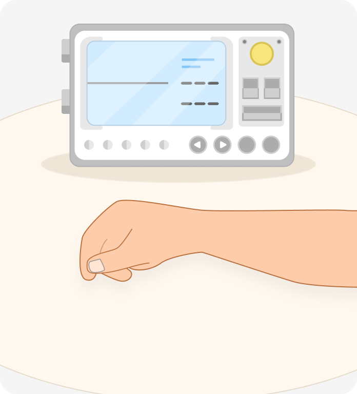
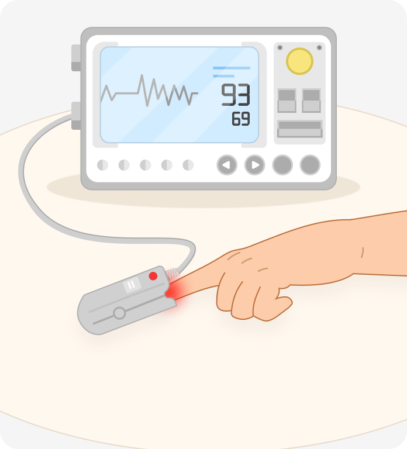
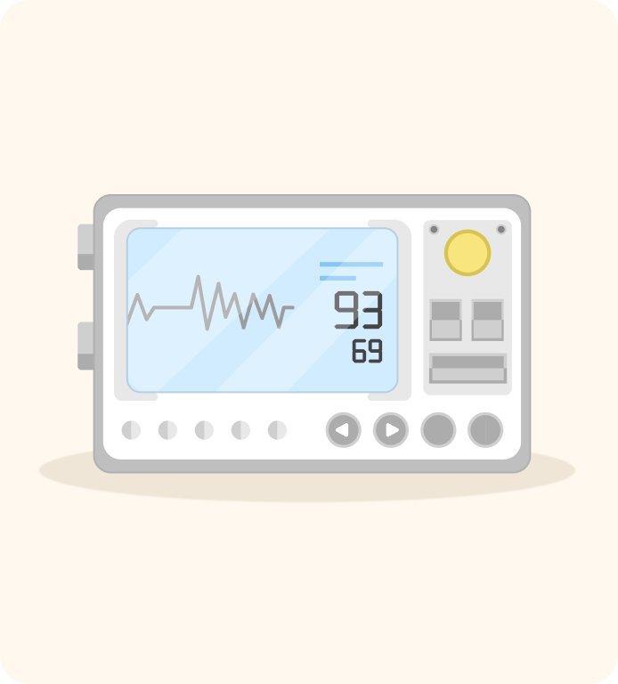

-
1.손의 이물질 제거
검지 손가락이 오염되어
있는지 확인하고,
매니큐어 등을 제거한 뒤
잠시 안정을 취합니다. -
2.측정 준비
 팔을 팔꿈치와 함께 테이블에
올려 놓습니다.
측정 중 움직임이 발생하면
측정 시간이 늘어나고 측정값이
정확하지 않을 수 있습니다 -
3.측정
 그림과 같이 프로브에
손가락을 끼웁니다.
측정이 잘 되지 않을 때에는
센서가 바르게 연결되어
있는지, 센서가 빛을
방출하는지 확인하세요 -
4.측정완료
 측정이 시작되면
약 8~15초 후에 산소포화도와
맥박수가 표시됩니다.